O problema
Gargalo de tempo até a distribuição de todos os casos da rodada aos peritos.
As pastas dos casos eram distribuídas após a obtenção dos perfis genéticos, e distribuído aos peritos em lotes de 5 a 8 pastas/perito. A distribuição incluía os casos ordinários e as cobranças e alguns ficavam sem distribuição durante algumas semanas
Redução de tempo para liberação dos laudos após a obtenção dos perfis genéticos
AS-IS · o processo antes do MVP
O caminho real, com quem faz, o que entra, onde espera e o que é automatizável. Fonte: tabela AS-IS do projeto.

Fluxograma AS-IS · amarelo: etapa manual; tracejado: ponto de espera. Os números correspondem à tabela. Fonte Mermaid.
| Etapa | Quem faz | Entra | Ação | Sai | Sistema | Regra | Onde espera | Tempo | Automatizável |
|---|---|---|---|---|---|---|---|---|---|
| Recebimento da solicitação de perícia | recepção do laboratório forense | materiais em lacre e documentos solicitantes | encaminhamento | sistema | decisão | recepção do laboratório | 2 | Sim, com apoio humano | |
| Busca dos envelopes de lacre e dos documentos solicitantes | Técnico do laboratório de DNA | materiais em lacre e documentos solicitantes | guarda dos materiais em lacre no container da custódia | sistema | regra | adm | 120 | Sim, com apoio humano | |
| cadastro em planilha | Técnico do laboratório de DNA | dados de cada requisição | cadastro dos dados da requisição | planilha alimentada | sistema | decisão | adm | 120 | Sim, com apoio humano |
| Ranqueamento da prioridade dos protocolos | Coordenador, mas estamos estruturando um Power BI baseado em pesos | dados | Análise do intervalo entre a data do fato e a data da coleta do material | lista classificada | sistema | regra | automático | 0 | Sim, com regra clara |
| solicitação de amostras da custódia | Técnico do laboratório de DNA | busca ativa | envelopes de lacre | sistema | regra | sala de custódia | 8 | Sim, com apoio humano | |
| entrega do envelope de lacre ao perito | Técnico do laboratório de DNA | entrega física e da custódia do material | envelopes de lacre | papel | regra | freezer | 4 | Não | |
| conferência e aliquotagem dos materiais | perito com auxílio de técnico | amostra íntegra | aliquotagem | amostra aliquotada | papel | decisão | tempo de bancada | 2 | Sim, com apoio humano |
| encaminhamento para processamento até a obtenção do perfil genético | perito | amostra aliquotada | extração do dna, purificação, quantificação, normalização, amplificação, eletroforese capilar, montagem e liberação de projeto, análise dos perfis genéticos | perfil genético | sistema | regra | laboratório de processamento de amostras questionadas | 96 | Sim, com apoio humano |
| distribuição das pastas aos peritos | coordenador | pastas dos casos | repasse da custódia dos documentos | pastas dos casos | papel e sistema | decisão | até a próxima distribuição | 120 | Pouco |
| análise do caso, dos resultados e elaboração do laudo pericial | perito | dados | análise dos perfis genéticos, confronto genético, análise estatística e confecção do laudo | laudo pericial | sistema | regra | mesa do perito | 48 | Sim, com apoio humano |
| Inclusão do laudo no sistema Atena | perito | arquivo | upload | arquivo | sistema | regra | sistema | 1 | Não |
TO-BE · o processo com o MVP
O que muda em cada etapa, quem passa a fazer e o ganho esperado. Fonte: tabela TO-BE do projeto.

Fluxograma TO-BE · verde: máquina (automação local); azul: pessoa (fé pública). Fonte Mermaid.
Redução do tempo de distribuição dos casos e consequente redução no tempo de liberação dos laudos periciais
- Aliquotagem e fila de cobranças
As cobranças são distribuídas logo após a aliquotagem, em fila separada
A pessoa assistida pela máquinaAntecipa a compilação de dados - Rodada de casos ordinários
A rodada inteira da placa vai para um perito, em rotação
A máquina (automação)Reduz o tempo até a distribuição - Registro da distribuição
O sistema grava perito, data e hora de cada pasta
A máquina (automação)Rastreabilidade e medida do tempo - Acompanhamento
Painel com o tempo entre o processamento e a distribuição
A máquina (automação)Mostra o ganho do piloto
| Etapa | O que muda | Quem faz | Benefício | Esforço |
|---|---|---|---|---|
| Aliquotagem e fila de cobranças | As cobranças são distribuídas logo após a aliquotagem, em fila separada | A pessoa assistida pela máquina | Antecipa a compilação de dados | Baixo |
| Rodada de casos ordinários | A rodada inteira da placa vai para um perito, em rotação | A máquina (automação) | Reduz o tempo até a distribuição | Médio |
| Registro da distribuição | O sistema grava perito, data e hora de cada pasta | A máquina (automação) | Rastreabilidade e medida do tempo | Baixo |
| Acompanhamento | Painel com o tempo entre o processamento e a distribuição | A máquina (automação) | Mostra o ganho do piloto | Baixo |
O que o MVP entrega
Tela-assinatura: Placa de 96 poços com a cor do perito.
Menu do MVP: PainelRodadasNova rodadaMeus casosImportar protocolosConfiguração
Regras de negócio
| ID | Regra | Quando | Tipo | Exceção |
|---|---|---|---|---|
RN01 | A rodada só é distribuída quando todos os casos ordinários estão processados | Na distribuição | Negócio | Cobranças seguem a fila própria |
RN02 | Todos os casos ordinários da rodada vão para o mesmo perito | Na distribuição | Negócio | Nenhuma |
RN03 | As cobranças ficam em fila separada e são distribuídas depois da aliquotagem | No cadastro e na distribuição | Negócio | Nenhuma |
RN04 | O perito da rodada anterior não recebe a rodada seguinte (rotação) | Na sugestão de perito | Cálculo | Menos de 3 peritos ativos |
Papéis
| Papel | Quem é | O que vê | O que faz | O que não faz | Registro |
|---|---|---|---|---|---|
| coordenador | Responsável pela gestão operacional do laboratório e pela supervisão das equipes e dos processos. | Painel geral, fila de exames, status das amostras, prazos, pendências, indicadores, relatórios e histórico de atividades conforme sua autorização. | Distribui demandas, acompanha prazos, supervisiona o fluxo de trabalho, trata pendências, autoriza ações administrativas previstas e acompanha indicadores de desempenho. | Alterar resultados periciais sem autorização e justificativa formal; apagar registros de auditoria; acessar dados restritos sem necessidade funcional; aprovar o próprio trabalho quando houver segregação obrigatória de funções. | Login e acessos, distribuição de exames, alterações de prioridade, decisões administrativas, autorizações, justificativas, consultas e exportações de dados. |
| técnico administrativo | Profissional responsável pelo recebimento, cadastro, organização documental e controle administrativo dos exames e das amostras. | Cadastros, solicitações, identificação e situação administrativa das amostras, documentos, protocolos, pendências e prazos necessários à sua função. | Cadastra solicitações, confere documentos, registra recebimentos e movimentações autorizadas, organiza processos, atualiza dados administrativos e encaminha demandas aos responsáveis. | Validar ou alterar resultados de DNA; emitir conclusões periciais; modificar dados técnicos sem autorização; liberar laudos restritos; excluir registros definitivos ou contornar controles de acesso. | Cadastros e alterações, recebimento e encaminhamento de materiais, conferências documentais, usuário responsável, data e hora das ações e justificativas de correção. |
| perito | Profissional habilitado responsável pela análise técnico-científica das amostras e pela elaboração ou validação das conclusões periciais, conforme sua competência. | Dados técnicos autorizados, identificação codificada das amostras, cadeia de custódia, protocolos analíticos, resultados laboratoriais, controles de qualidade, histórico de processamento e documentos pertinentes ao exame. | Analisa amostras, registra procedimentos, interpreta resultados, documenta inconformidades, elabora conclusões e assina ou valida laudos conforme suas atribuições e os procedimentos do laboratório. | Alterar ou apagar resultados sem trilha de auditoria; modificar a cadeia de custódia retroativamente; acessar casos sem autorização; validar análises fora de sua competência; liberar resultados sem cumprir os critérios de revisão aplicáveis. | Acesso ao caso, identificação das amostras, etapas analíticas, métodos utilizados, equipamentos e reagentes quando aplicável, resultados, controles, revisões, alterações justificadas, assinatura e emissão de laudos. |
Métricas do piloto
Como testar
O MVP é um `index.html` offline, com dados fictícios. Abra index.html.
cd Apps/distribuicao-casos-dna python construir.py python testes/testar.py python testes/cenarios.py python testes/jornada.py # Lightpanda (via WSL, CDP em 9222 e HTTP em 8000) python testes/jornada.py --cdp http://127.0.0.1:9222 --base http://127.0.0.1:8000
Documentos: PROJETO.md · sprint.md · README.md